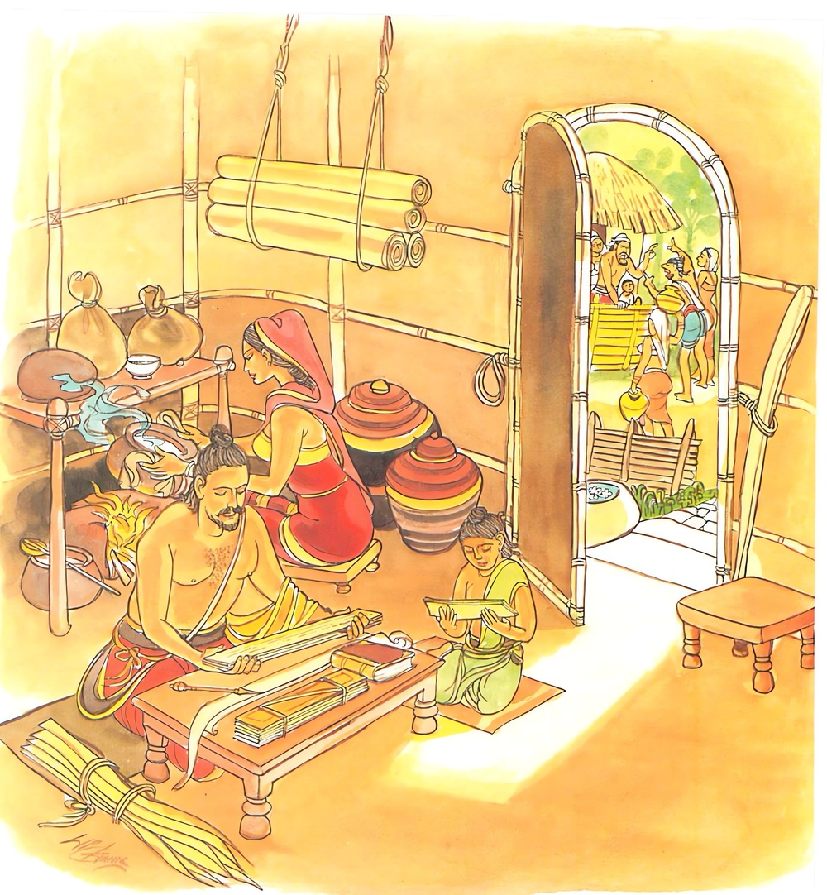

4-6 පාඨිකාජීවකයා
මෙම කතාව ධම්මපද අටුවාවෙන් ද කියවන්න.
න පරෙසං විලොමානි න පරෙසං කතාකතං
අත්තනො’ව අවෙක්ඛෙය්ය කතානි අකතානි ච.
මෙරමාගේ පරොස් බස් මෙනෙහි නො කරන්නේ ය (නො කට යුතු). මෙරමා කළ නො කළ දුසිරි සුසිරි නො බලන්නේ ය. තමා කළ දුසිරි ද නො කළ සුසිරි ද බලන්නේ ය (බැලිය යුතු).

සැවැත්නුවර ගෘහපතිභාර්ය්යාවක් තොමෝ පාඨික නම්, ආජීවකයකු, පුත් තනතුරේ තබා වඩයි. දවසක අසල්වැසි මිනිස්සු විහාරයට ගොස් බුදුරජුන්ගෙන් බණ අසා අවුත් ඈ ඉදිරියෙහි ‘බුදුරජුන්ගේ බණකීම ඉතා පුදුමැ’ යි නොයෙක් අයුරින් බුදුගුණ කියන්නට වූහ. ඈ ඒ අසා පුදුමයට පැමිණ විහාරයට ගොස් බණ අසනු කැමති බව ආජීවකයාට කිවු ය. හෙතෙමේ ‘නො යව’ යි ගමන වැළකූයේ ය. එහෙත් ඕ තොමෝ නැවැත නැවැතත් යායුතු බව ම දැන් වූ ය. ආජීවකයා, ඒ හැමවර ම ඇගේ ගමනට බාධා කෙළේ ය. ‘මොහු විහාරයට ගොස් බණ අසන්නට ඉඩ නො දෙන බැවින්, බුදුරජුන් වැඩමවා ගෙණ මෙහිදී ම බණ අසන්නෙමි’ යි සිතා සවස් වේලෙහි සියපුතු ගෙන්වා ‘පුත! විහාරයට ගොස් බුදුරජානන් වහන්සේට හෙට මෙහි වඩින්නට ආරාධනා කොට එන්නැ’ යි ඔහු පිටත් කළා ය.
විහාරයට යන ගමනේ දී ඔහු පළමු ව ආජීවකයා ලඟට ගොස් වැඳ පසෙක හුන්නේ ය. එවිට ‘කොහි යෙහි දැ’ යි ආජීවකයා ඇසී ය. ‘හෙට අප ගෙට වඩින්නට බුදුරජුන්ට ආරාධනා කරන්නැ’ යි අම්මා කිව්වා, ඒ නිසා මම විහාරයට යන්නෙමි’ යි කී ය. ‘එහි යන්නට වුවමනා නැතැ යි ආජීවකයා කී කල්හි ‘ස්වාමීනි! මා එහි යා යුතුම ය, මම අම්මාට බය යි, යන්නට ම ඕනෑ ය’ යි කීයේ ය. එවිට ආජිවකයා ‘ඔය බුදුන්ට දෙන දෙය අප දෙදෙනාට කෑ හැකි ය, යන්නට එපා ය’ යි නැවැත ද කී ය. ‘මට කොයිහැටියකින්වත් ඒ ආරාධනාව නො කොට බැරි ය, ආරාධනා නො කොට ගියොත් අම්මාගෙන් බේරුමක් නැතැ’ යි කී කල්හි ‘හා! ආරාධනා නො කොට ම බැරි නම්, එහි ගොස් ආරාධනා කොට අපේ ගේ අසුවල් තැන ය, අසුවල් කඩපේළියේ ය, අසුවල් පාරෙන් යා යුතු ය, යනාදී කිසිවක් නො කියා, ලඟ සිටියකු සේ අන් මගකින් යන්නකු සේ පැනලා එව’ යි කී ය. ඔහු ද මේ කතාව අසා බුදුරජුන් වෙත ගොස් කී පරිද්දෙන් සියල්ල කොට ආජීවකයා වෙත ගියේ ය. ‘කොහොම ද, මා කියූ සැටි කෙළෙහි දැ’ යි ඇසූ කල්හි ‘ඔව්, ස්වාමීනි! එසේ කෙළෙමි’ යි පිළිතුරු දුන්නේ ය. ‘එහෙනම් ඔහුට දෙන දෙය අප දෙදෙනාට කෑ හැකි ය’ යි පසුදා උදෑසනින් ම ඔහු එහි ගියේය.
ගෘහපති භාර්ය්යයා තොමෝ ආජීවකයා ගෙයි පිටිපසැ කාමරයෙක හිඳුවා මිනිසුන් ලවා ගෙයත් පිරිබඩ කරවා ලදපස්මල් ඉස්සවා බුදුරජුන්ට හිඳින්නට එහි මාහැඟි අසුනක් පැණවූවාය. බුදුරජුන් වෙත ගොස් පුරුදුකම් නැති මිනිස්සු බුදුරජුන්ට අසුන් පැනවීම නො දනිති. මග කියන්නකුගෙන් බුදුරජුන්ට වැඩෙක් නැත. බෝමැඩැ වැඩ හිඳ බුද්ධඥානය ලත් වේලේ ‘මේ නරකයට යන මග ය, මේ මග තිරිසන් අපායට ය, මේ ය ප්රේත ලෝකයට යන මග, මිනිස්ලොවට යන්නේ මේ මගින් ය, මේ දෙව්ලොවට මගය, මේ මග නිවන් පුරයටැ’ යි උන්වහන්සේට සියලු මග එලිපෙහෙලි වී ය. ගම් නියම්ගම් යන මං ගැණ කිය යුත්තෙක් ම නැත. එ හෙයින් බුදුරජානන් වහන්සේ උදෑසන ම පාසිවුරු ගෙණ උපාසිකාවගේ ගෙට වැඩි සේක. ඕ බුදුරජුන් දැක යුහු ව ගෙන් පිටතට බැස පසඟ පිහිටුවා වැඳ ගේ තුළට වැඩම කරවා අසුන්හි වඩා හිඳුවා පැන් පිළිගන්වා ඉතා රසැති කැම්බීම්වලින් බුදුන් වැලඳෙව්වා ය.
උපාසිකා තොමෝ වලඳා අවසන් කළ බුදුරජානන් වහන්සේ ලවා අනුමෙවෙනි බණ කරවනු කැමැත්තී පාත්රය ගත්තා ය. උන්වහන්සේ මිහිරි හඬින් බණ දෙසූ සේක. උපාසිකා තොමෝ සාධුකාර දි දී බණ ඇසූ ය. ඇතුල් කාමරයෙහි හුන් ආජීවක තෙමේ සාධුකාර දෙමින් බණ ඇසූ උපාසිකාවගේ කට හඬ අසා ඉවසාගත නො හී ‘මෝ දැන් මාගේ දායිකාවක් නො වේ’ යි කියමින් ‘කාලකණ්ණි තැනැත්තිය! තී නටුවා වෙහි, මොහුට මේ සත්කාර කුමට කරණු ලැබේ දැ’ යි බුදුරජුන්ට හා උපාසිකාවට බැණ වදිමින් පලා ගියේ ය. ඉන් ලජ්ජාවට පැමිණි උපාසිකා තොමෝ අන් අතකට නතු වූ තම සිත, දේශනානුසාරයෙන් නුවණට යොමු කරන්නට අපොහොසත් වූ ය. එවිට බුදුරජානන් වහන්සේ ‘උපාසිකා! බණට සිත යොමු කරන්නට අපොහොසත් දැ යි අසා වදාළ සේක. ‘ස්වාමීනි! මොහුගේ කතාවෙන් මා සිත අන් අතකට පෙරළිනැ’ යි කිවු ය. ‘විසභාග මනුෂ්යයන්ගේ කතාවනට කන් දීම නො සුදුසු ය, මෙබඳු දේට කන් නො දී එ ගැන නො සිතා නො විමසා තමන් කළ නො කළ දේ ගැණ සිතා මතා බැලීම ය කළයුතු’ යි වදාළ බුදුරජානන් වහන්සේ මේ ධර්මදේශනාව ද කළ සේක:-
න පරෙසං විලොමානි න පරෙසං කතා කතං,
අත්තනො ව අවෙක්ඛය්ය කතානි අකතානි චාති.
අනුන්ගේ බැණුම් දෙඩුම් මෙනෙහි නො කළ යුතු ය. අනුන් කළ නො කළ දේ මෙනෙහි නො කළ යුතු ය. තමන් කළ දුශ්චරිත හා නො කළ සුචරිත ගැන සිතා මතා බැලිය යුතු ය.
න පරෙසං විලොමානි = අනුගේ ඇණුම් බැණුම් මෙනෙහි නො කරන්නේ ය.
‘පරෙසං විලොමානි ඵරුසානි මමච්ඡෙදකවචනානි න මනසිකාතබ්බානි’ යනු අටුවා ය. අනුන් කියන පරුෂ වූ මර්මඡෙදකවචන මෙනෙහි නො කටයුතු ය, යනු එහි තේරුම යි. ලෝකයා විසින් අනුන්ට ගටා බිණීමට ජාති-ගෝත්ර-නාම කර්ම-ශිල්ප-ආබාධ-ලිඞ්ග-ක්ලේශ-ආපත්ති-ආක්රෝශ යන මේ දශය ඇද ගණු ලැබේ. එ තෙක් ‘තාගේ ජාතිය හීන ය, ලාමක ය, තෝ හීන ජාති ඇත්තෙහි, ලාමක ජාති ඇත්තෙහි’ යනාදී ලෙසින් අනිකක්හට ජාතියෙන් ගටා බණියි. සෙස්ස ද මේ නයින් සැලකිය යුතු ය. තව ද ඔටුවෙක-එළුවෙක-ගොණෙක-තිරිසනෙක-නිරිසතෙක-ශ්රමණයෙක් නො වෙහි ය, තම ධනධාන්ය නැත, තා දුගතිය කැමැති විය යුතු ය’ යන මේ ඈ ලෙසිනුදු එකෙක් අනිකාට ගරහයි. බණියි. මේ කඨොරවචන අසන්නහුගේ මර්මච්ඡෙදය කරණ බැවින් ‘විලෝම වචනැ’ යි කියති.
න පරෙසං කතාකතං = අනුන්කළ නොකළ දෙය නො බලන්නේය.
‘අසුවල් උපාසක තෙමේ ශ්රද්ධාව නැත්තෙක, පැහැදීම් නැත්තෙක, ඔහුගේ ගෙයි ලාබත් සැඳිබත් ආදී වූ කිසිත් දානයෙක් නැත, චීවර-පිණ්ඩපාත-සෙනාසන-ග්ලානප්රත්යය යන සිවුපසයෙන් කිසිත් නො දෙන් ය, අසුවල් උපාසිකා තොමෝ ශ්රද්ධාව නැත්තියක, පැහැදීම් නැත්තියක, දන් නො දෙන්නී ය. අසුවල් භික්ෂුව ශ්රද්ධාව නැත්තෙක, පැහැදීම් නැත්තෙක, උපාද්ධ්යාය ආචාර්ය්ය ආගන්තුකවත් නො කරන්නේ ය, හොජනශාලා ජන්තාඝරවත් නො කරන්නේ ය, ධුතාඞ්ග නො රකින්නේ ය, භාවනානුයෝගයෙහි උත්සාහ නො කරන් ය’ යනාදි ලෙසින් අනුන් කළ නො කළ දේ ගැණ නො සිතිය යුතු ය, යනු කී සේ ය ඒ.
අත්තනො එව අවෙක්ඛෙය්ය කතානි අකතානිච = තමන් කළ දේත් නො කළ දේත් බලන්නේ ය.
සැදැලෙන් පැවිදි වූ කුලපුතුන් විසින් මාගේ රෑදාවල ගෙවෙනුයේ වත්පිළිවෙත් පිරීමෙන් ද, බුදුවදන් හැදෑරීමෙන් ද, තිලකුණු මෙනෙහි කිරීමෙන් ද, යෝනිසෝමනසිකාරයෙහි යෙදීමෙන් ද, නැත, දඬුමොරොන්කමින් ද නිදීමෙන් ද, වාචාල කමින් ද, සඞ්ගණිකාවෙහි යෙදීමෙන් ද, වත්පිළිවෙත් නො පිරිමෙන් ද, බුදුවදන් නො හැදෑරීමෙන් ද, යෝනිසෝමනසිකාරයෙහි නො යෙදීමෙන්දැ’ යි. නිතර සිහිකළ යුතු ය. මෙසේ කරන්නේ නම්, ඕහට අප්රමාද පදය පිරෙන්නේ ය. එහෙත් කළ නො කළ දේ ගැණ පසුතැවිලි නො විය යුතු ය. එය ප්රමාදයට කරුණු වන බැවිනි.
ධර්මදේශනාවගේ අවසානයෙහි උපාසිකා තොමෝ සෝවන් ඵලයෙහි පිහිටියා ය. දේශනාව මහාජනයාට වැඩ සහිත වූ ය.
පාඨිකාජිවක වස්තුව නිමි.